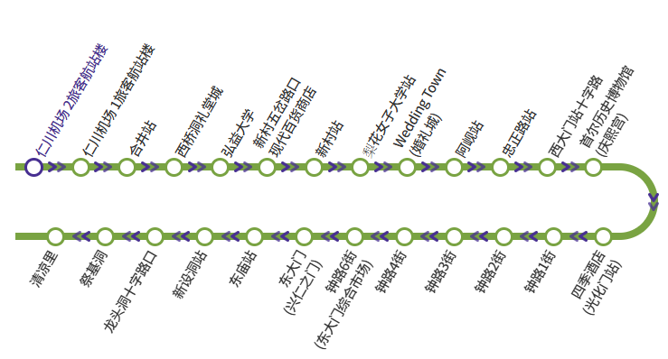
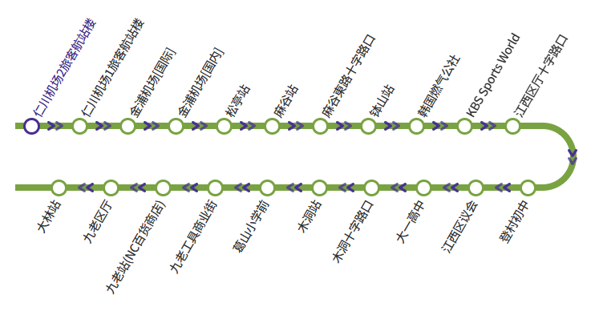
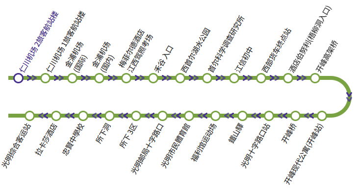

📍 仁川機場 T2 走路至 30號 乘車場 (地下1樓)
⚠️ 注意：自2026年3月5日起，門票必須在售票處購買
🚌 搭到 西橋洞禮堂城 (總共2站不含機場)
預訂號碼：1616328844292262
PIN 碼：2082
📍 韓文地址 ：
로컬스티치 크리에이터 타운 서교
📍 英文地址：
460-25 Seogyo-dong, 麻浦區, 04002 首爾, 韓國
🚇 地鐵位置：
2號線 弘大入口站 走路10-12分鐘
6號線 望遠站 走路10-15分鐘
📞 撥打飯店電話：
+82-23328601
📍 仁川機場 T2 走路至 30號 乘車場 (地下1樓)
🚌 搭到 西橋洞禮堂城 (總共2站不含機場)

📍 仁川機場 T2 走路至 24號 乘車場 (地下1樓)
🚌 搭到 登村初中 (總共10站不含機場)

📍 登村中學站步行1分鐘 走路至 登村中學 白石小學
📍 白石小學16006 ➡ 西教洞(中)14013(往弘毅大學)
🚌 搭到 西橋洞(中) (總共8站)
🚶♂️ 步行 6分鐘抵達飯店
📍 登村中學站步行1分鐘 走路至 登村中學 白石小學
📍 白石小學16006 ➡ 西教洞(中)14013(往Jung-gu off ice,Deoksu middle school)
🚌 搭到 西橋洞(中) (總共8-9站)
🚶♂️ 步行 6分鐘抵達飯店
📍 仁川機場 T2 走路至 24號 乘車場 (地下1樓)
🚌 搭到 首爾科學調查研究所 (總共6站不含機場)

📍 首爾科學調查研究所站步行三分鐘 走路至 新月文化體育中心
📍 新月文化體育中心15366 ➡ 西教洞(中)14013(往市廳站)
🚌 搭到 西橋洞(中) (總共23站)
🚶♂️ 步行 6分鐘抵達飯店
💡 建議將 Trip.com 的確認畫面截圖放在下方，避免沒網路：